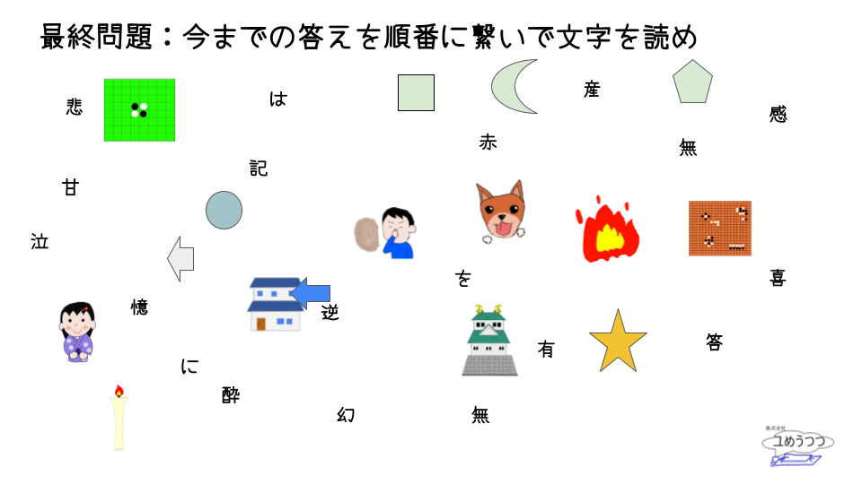

謎解きゲーム「memories」へようこそ 以下の注意点を読んで、準備が良ければ「ルールはわかりましたか」のフォームに「わかった」と入力し送信を押してください
こたえはひらがなで入力してください
入力後、送信ボタンを押してください。正誤判定を行います
質問があれば、「ルールはわかりましたか」のフォームに質問を入力してください。
ルールはわかりましたか？
送信！
number:{{ n }}
送信！
answer correct!!
answer incorrect...

送信！